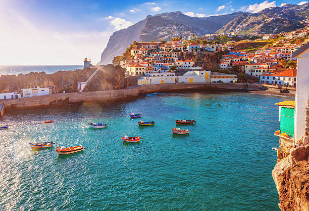
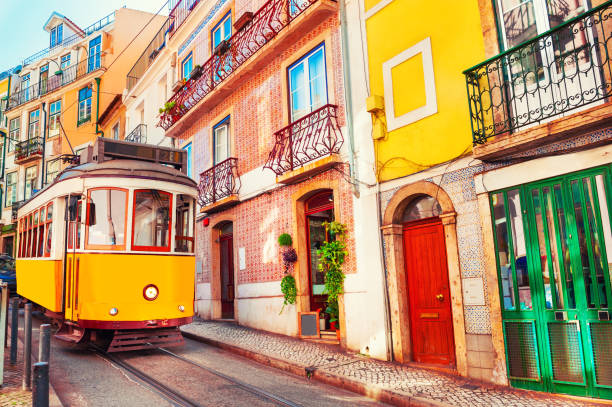
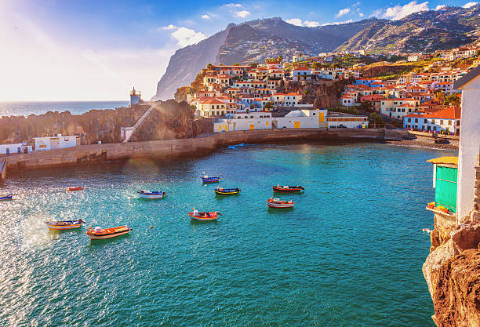
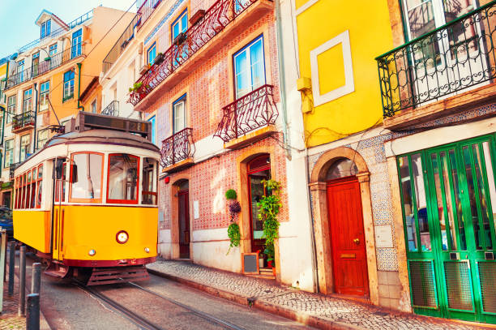
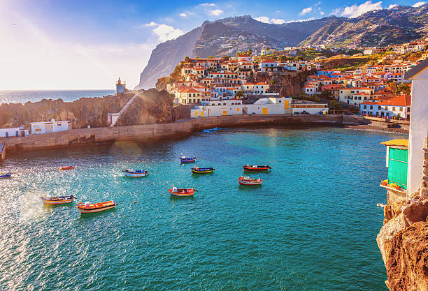
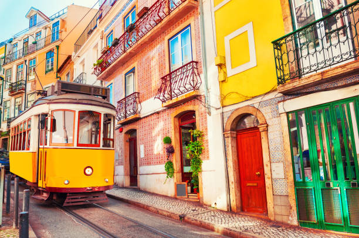
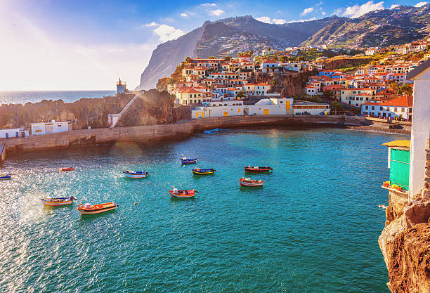
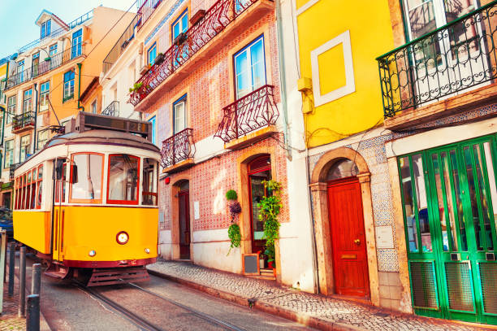

Portugal é pontilhado por cidades históricas que preservam o charme de épocas passadas. Lisboa, a capital, é uma cidade vibrante que mistura tradição e modernidade, com seus bairros históricos como Alfama e Belém, repletos de monumentos e edifícios antigos, como a Torre de Belém e o Mosteiro dos Jerónimos. Porto, conhecida por suas ruas estreitas e casas coloridas, é famosa pelo vinho do Porto e pelas suas belas pontes sobre o rio Douro. Coimbra, uma cidade universitária animada, abriga uma das universidades mais antigas da Europa e um cenário cultural rico.
Portugal é abençoado com uma variedade de paisagens naturais deslumbrantes. Desde as falésias escarpadas da Costa Vicentina até as praias douradas do Algarve, os amantes da natureza encontrarão uma infinidade de cenários para explorar. A região do Douro oferece vinhedos em socalcos que se estendem até onde a vista alcança, criando uma paisagem de tirar o fôlego, enquanto a região montanhosa da Serra da Estrela oferece oportunidades para caminhadas e esportes de inverno. Os Parques Naturais, como o Parque Nacional da Peneda-Gerês, proporcionam habitats intocados para uma variedade de vida selvagem e atividades ao ar livre.
A rica cultura de Portugal se reflete em sua música, dança, arte e culinária. O fado, música tradicional portuguesa, é uma expressão emocional que cativa os ouvintes com suas melodias melancólicas. A gastronomia portuguesa é uma celebração de sabores autênticos, com pratos como o bacalhau à brás, o pastel de nata e o delicioso cozido à portuguesa. Os mercados locais oferecem uma variedade de produtos frescos, queijos e vinhos para os visitantes explorarem e degustarem. Festivais de comida e vinho acontecem ao longo do ano, proporcionando uma oportunidade para os turistas se envolverem com a cultura gastronômica local. Com sua riqueza cultural, paisagens deslumbrantes e delícias gastronômicas, Portugal é verdadeiramente um destino turístico imperdível para quem busca uma experiência autêntica e memorável.